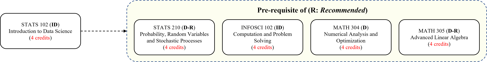

Introduction to Data Science (STATS 102)
Spring 2021-2022 / Session 3 (7 weeks, 35 + 8.75 | 8.75 hours)
Course Period: January 10 - March 3, 2022
- Lectures: Monday / Tuesday / Wednesday / Thursday @ 11:45-13:00 (Classroom: AB 2107 + Zoom)
- Labs: Thursday @ 14:45-16:00 (102-001L); 16:15-17:30 (102-002L) (Classroom: AB 2107 + Zoom)
As an introductory course in Data Science, this course will show you not only the big picture of data science but also the detailed essential skills of loading, cleaning, manipulating, visualizing, analyzing and interpreting data with hands-on programming experience. You will be able to adopt the techniques and tools to identify, formulate and solve some simple practical data analysis problems. This course is an elective course open to everyone, and no specific prerequisite required. Successfully completing this course will also bring new concepts and tools to other future courses in social science, arts humanities and natural science.
Despite the detailed knowledge and skills about data science, we also want you to develop your high level capabilities closely related to the DKU's animating principles, for instance, collaborative problem-solving, research and practice, lucid communication, etc. In this course, there are group activities and group projects that encourage collaborative problem solving. Also, there are lab sessions each week to encourage group discussion on mini-projects. In the final project, you will have the opportunity to collect real data from the practical world related to a topic of interest, and apply the knowledge and skills to handle data. Moreover, these group discussion and project presentation activities will help you enhance the capability of lucid communication.
By the end of this course, you will be able to:
- manage fundamental Python programming techniques
- employ frequently used Python libraries, such as NumPy, SciPy, Pandas, Matplotlib, scikit-learn
- design project topics and collect valid data for that topic
- apply simple data analysis methods on real data
- evaluate whether the selected methods and experimental results are reasonable
- plan and manage the progress of final project in an efficient way
- develop written and oral presentation skills
Pre-requisites
- None. Not open to students who have credit for COMPSCI 101: Introduction to Computer Science
The following chart shows how STATS 102 fits to the DKU curriculum, where the abbreviations indicate the course types, i.e. D: Divisional, DF: Divisional Foundation, ID: Interdisciplinary and E: Elective. Refer to the DKU Undergraduate Bulletin for more details.

Reference Books
There is no official textbook for this course. Still, the following books can be used as references.- Data Science Design Manual, Steven S. Skiena (1st Edition), 2017, Springer
- Computational and Inferential Thinking: The Foundations of Data Science, Ani Adhikari, John DeNero, David Wagner (2nd Edition), 2021, Data8 - U.C. Berkeley (Free Book)
- Foundations of Data Science, Avrim Blum, John Hopcroft, Ravindran Kannan (1st Edition), 2018/2020, Cambridge University Press (Free Book)
- Data Science for Business, Foster Provost, Tom Fawcett (1st Edition), 2013, O'Reilly
- A Hands-On Introduction to Data Science, Chirag Shah (1st Edition), 2020, Cambridge University Press
- High-Dimensional Data Analysis with Low-Dimensional Models, John Wright, Yi Ma (1st Edition), 2018, Cambridge University Press (Free Draft)
Python Programming:
- Introducing Python for Computer Science and Data Scientists, Paul Deitel, Harvey Deitel (1st Edition), 2020, Pearson
- Introduction to Computation and Programming Using Python: With Application to Computational Modeling and Understanding Data, John V. Guttag (3rd Edition), 2021, MIT Press [ Source Code in Python ]
- Starting out with Python, Tony Gaddis (5th Edition), 2021, Pearson
- Python Programming and Numerical Methods: A Guide for Engineers and Scientists , Qingkai Kong, Timmy Siauw, Alexandre Bayen (1st Edition), 2020, Academic Press (Free Book)
- Think Python: How to Think Like a Computer Scientist, Allen B. Downey (2nd Edition), 2016, O'Reilly Press (Free Book)
- How to Think Like a Computer Scientist: Learning with Python 3, Peter Wentworth, Jeffrey Elkner, Allen B. Downey, Chris Meyers (3rd Edition), 2012 (Free Book)
- A Programmer's Guide to Computer Science (Vol. 1), William M. Springer II (1st Edition), 2019, Jaxson Media
- A Programmer's Guide to Computer Science (Vol. 2), William M. Springer II (1st Edition), 2020, Jaxson Media
- A Byte of Python, Swaroop C. H. (4th Edition), 2016 (Free Book)
- Project Python, Devin Balkcom, 2011 (Free Book)
- Python for Everybody: Exploring Data in Python 3, Charles Severance, 2016 (Free Book)
- Automate The Boring Stuff With Python, Al Sweigart (2nd Edition), 2019, No Starch Press (Free Book)
- Python Programming in Context, Bradley N. Miller, David L. Ranum, Julie Anderson (3rd Edition), 2019, Jones & Bartlett Learning
- Python Programming: An Introduction to Computer Science, John Zelle (3rd Edition), 2016, Franklin, Beedle & Associates
- A Hands-On, Project-Based Introduction to Programming, Eric Matthes (2nd Edition), 2016, No Starch Press (Free Book)
- Learn Python 3 the Hard Way, Zed A. Shaw (1st Edition), 2017, Addison-Wesley
- Introducing Python: Modern Computing in Simple Packages, Bill Lubanovic (2nd Edition), 2019, O'Reilly Press
- Clean Code in Python: Develop Maintainable and Efficient Code, Mariano Anaya (2nd Edition), 2021, Packt
- The Self-Taught Computer Scientist: The Beginner's Guide to Data Structures & Algorithms, Cory Althoff (1st Edition), 2021, Wiley
- The Big Book of Small Python Projects: 81 Easy Practice Programs, Al Sweigart (1st Edition), 2021, No Starch Press (Free Book)
- Invent Your Own Computer Games with Python, Al Sweigart (4th Edition), 2016, No Starch Press (Free Book)
- Cracking Codes with Python: An Introduction to Building and Breaking Ciphers, Al Sweigart (1st Edition), 2018, No Starch Press (Free Book)
Python Programming for Data Science / Analytics:
- Python Data Science Handbook: Essential Tools for Working with Data, Jake VanderPlas (1st Edition), 2017, O'Reilly Press (Free Book) [ Code Repository ]
- Python for Data Analysis: Data Wrangling with Pandas, NumPy, and IPython, Wes McKinney (2nd Edition), 2017, O'Reilly Press [ Code Repository ]
- Data Science from Scratch: First Principles with Python, Joel Grus (2nd Edition), 2019, O'Reilly Press
- Introduction to Machine Learning with Python: A Guide for Data Scientists, Andreas C. Muller, Sarah Guido (1st Edition), 2017, O'Reilly Press
- Data Science Using Python and R, Chantal D. Larose, Daniel T. Larose (1st Edition), 2019, O'Reilly Press
Probability & Statistics:
- Probability & Statistics with Applications to Computing, Alex Tsun (1st Edition), 2020 (Free Book)
- External Course: CS109: Probability for Computer Scientists by Alex Tsun and Tim Gianitsos (Stanford U)
- External Course: CSE312: Foundations of Computing II by Alex Tsun (Washington U), Summer 2020
- Introduction to Probability, Charles M. Grinstead, J. Laurie Snell (2nd Edition), 2017 (Free Book)
- Introduction to Modern Statistics, Mine Cetinkaya-Rundel, Johanna Hardin (1st Edition), 2021 (Free Book)
- Introductory Statistics with Randomization and Simulation, David M. Diez, Christopher D. Barr, Mine Cetinkaya-Rundel (1st Edition), 2014 (Free Book)
- OpenIntro Statistics, David Diez, Mine Cetinkaya-Rundel, Christopher D. Barr (4th Edition), 2019 (Free Book)
Lecture Notes / Slides
- Week 0 (Background - Optional)
- Computing / Computers
- External Course: 6.00: Introduction to Computer Science and Programming (MIT) [ Lecture Videos ]
- Week 1 [10/01 - 13/01] (Keywords: Terminology and Basics; Variables; Expressions; Statements; Control Statements; Functions)
- About STATS 102
- Lecture Slides: L1-0: About STATS 102
- Data Science: Basics
- Lecture Slides: L1-1: Data Science - Basics
- Article: 50 Years of Data Science. Donoho, D., 2017. Journal of Computational and Graphical Statistics, 26(4)
- Article: The Battle for Data Science. Ullman, J.D., 2020. IEEE Data Engineering Bulletin, 43(2)
- Article: Leveraging Data Science to Combat COVID-19: A Comprehensive Review. Latif, S., Usman, M., Manzoor, S., Iqbal, W., Qadir, J., Tyson, G., Castro, I., Razi, A., Boulos, M.N.K., Weller, A. and Crowcroft, J., 2020. IEEE Transactions on Artificial Intelligence, 1(1)
- Python Programming: Background
- Lecture Slides: L1-2: Python Programming - Background
- External Lecture Slides / Videos / Book Chapter: Python for Everybody by Charles R. Severance - Chapter 1 (Introduction)
- External Videos: Computer Pioneers: Part 1 & Part 2 by Computer History Museum
- Python Programming: Variables, Statements and Basic Operators
- Lecture Slides: L1-3: Python Programming - Variables, Statements and Basic Operators
- External Lecture Slides / Videos / Book Chapter: Python for Everybody by Charles R. Severance - Chapter 2 (Variables)
- Python Programming: Control Statements
- Lecture Slides: L1-4: Python Programming - Control Statements
- External Lecture Slides / Videos / Book Chapter: Python for Everybody by Charles R. Severance - Chapter 3 (Conditionals)
- External Lecture Slides / Videos / Book Chapter: Python for Everybody by Charles R. Severance - Chapter 5 (Loops & Iterations)
- Python Programming: Functions
- External Lecture Slides / Videos / Book Chapter: Python for Everybody by Charles R. Severance - Chapter 4 (Functions)
- Lab: Turtle Graphics
- Week 2 [17/01 - 20/01] (Keywords: Strings; Lists; Tuples; Dictionaries; Sets; Files; Exceptions)
- Python Programming: Strings
- Lecture Slides: L2-1: Python Programming - Strings
- External Lecture Slides / Videos / Book Chapter: Python for Everybody by Charles R. Severance - Chapter 6 (Strings)
- Python Programming: Sequence Collections
- Lecture Slides: L2-2: Python Programming - Sequence Collections
- External Lecture Slides / Videos / Book Chapter: Python for Everybody by Charles R. Severance - Chapter 8 (Lists)
- External Lecture Slides / Videos / Book Chapter: Python for Everybody by Charles R. Severance - Chapter 10 (Tuples)
- Python Programming: Non-Sequence Collections
- Lecture Slides: L2-3: Python Programming - Non-Sequence Collections
- External Lecture Slides / Videos / Book Chapter: Python for Everybody by Charles R. Severance - Chapter 9 (Dictionaries)
- External Tutoial: A Random Online Tutorial - Sets
- Python Programming: Files and Exceptions
- Lecture Slides: L2-4: Python Programming - Files and Exceptions
- External Lecture Slides / Videos / Book Chapter: Python for Everybody by Charles R. Severance - Chapter 7 (Files)
- External Tutoial: Official Python Documentation - Errors and Exceptions
- Lab: Files and Exceptions
- Homework 1: TBA
- Weekly Mini Project 1: TBA
- Week 3 [24/01 - 27/01] (Keywords: Arrays; NumPy; Pandas; Matplotlib)
- Python Programming: NumPy (Arrays)
- Lecture Slides: L3-1: Python Programming - NumPy (Arrays)
- Book Chapter: Python Data Science Handbook - Chapter 2 (Introduction to NumPy)
- Python Programming: Pandas (Data Manipulation and Analysis)
- Lecture Slides: L3-2: Python Programming - Pandas
- Book Chapter: Python Data Science Handbook - Chapter 3 (Data Manipulation with Pandas)
- Python Programming: Matplotlib (Data Visualization)
- Lecture Slides: L3-3: Python Programming - Matplotlib
- Book Chapter: Python Data Science Handbook - Chapter 4 (Visualization with Matplotlib)
- External Tutorial: Official User Guide (Optional)
- Lab: Pandas, TBA...
- Homework 2: TBA
- Weekly Mini Project 2: TBA
- Week 4 [07/02 - 10/02] (Keywords: Combinatorial Theory; Combinatorics; Probability; Descriptive Statistics; Correlation Analysis; Logarithms)
- Combinatorial Theory
- Lecture Slides: L4-1: Combinatorial Theory
- Book Chapter: Probability & Statistics with Applications to Computing by Alex Tsun Chapter 1 (Combinatorial Theory)
- Book Chapter: Introduction to Probability by Charles M. Grinstead, J. Laurie Snell Chapter 3 (Combinatorics)
- Probability
- Lecture Slides: L4-2: Probability
- Book Chapter: Introduction to Probability by Charles M. Grinstead, J. Laurie Snell Chapter 1, 2, 4
- Descriptive Statistics
- Lecture Slides: L4-3: Descriptive Statistics
- Tutorial: Introduction to Data Mining by Pang-Ning Tan, Michael Steinbach, Anuj Karpatne, Vipin Kumar: Notebook - Data Exploration
- Correlation Analysis and Logarithms
- Lecture Slides: L4-4: Correlation Analysis and Logarithms
- Tutorial: Online Learning Modules (Boston U.) Correlation Analysis
- Tutorial: CS 109: Probability for Computer Scientists (Stanford U.) Correlation and Covariance
- Lab: Correlation Analysis
- Homework 3: TBA
- Weekly Mini Project 3: TBA
- Week 5 [14/02 - 17/02] (Keywords: Machine Learning; Linear Regression; Logistic Regression; Artificial Neural Networks)
- Introduction to Machine Learning
- Lecture Slides: L5-1: Introduction to Machine Learning
- Book Chapter: Python Data Science Handbook - Chapter 5 (What is Machine Learning?)
- Article: Jordan, M.I., 2019. Artificial intelligence-the revolution hasn't happened yet. Harvard Data Science Review, 1(1)
- Article: Jordan, M.I. and Mitchell, T.M., 2015. Machine learning: Trends, perspectives, and prospects. Science, 349(6245), pp.255-260
- Article: Breiman, L., 2001. Statistical modeling: The two cultures. Statistical science, 16(3), pp.199-231
- Learning Problem
- Lecture Slides: L5-2: Learning Problem
- Tutorial: Scikit-learn Tutorial - An introduction to machine learning with scikit-learn
- External Video: CS156: Learning Systems (Yaser Abu-Mostafa, Caltech) - Learning Problem
- Linear Regression
- Lecture Slides: L5-3: Linear Regression
- Book Chapter: Python Data Science Handbook - Chapter 5 (Introducing Scikit-Learn)
- Book Chapter: Python Data Science Handbook - Chapter 5 (In-Depth: Linear Regression)
- Tutorial: Scikit-learn User Guide - Linear Models
- External Lecture Notes: CS229: Machine Learning (Andrew Ng, Stanford U) [Part I] - Linear Regression (Optional)
- External Video: CS229: Machine Learning (Andrew Ng, Stanford U) - Linear Regression (Optional)
- Logistic Regression
- External Lecture Notes: CS229: Machine Learning (Andrew Ng, Stanford U) [Part II] - Logistic Regression
- External Video: CS229: Machine Learning (Andrew Ng, Stanford U) - Logistic Regression
- Perceptrons
- Article (Optional / Historical): McCulloch, W.S. and Pitts, W., 1943. A logical calculus of the ideas immanent in nervous activity. The bulletin of mathematical biophysics, 5(4), pp.115-133
- Article (Optional / Historical): Rosenblatt, F., 1958. The perceptron: a probabilistic model for information storage and organization in the brain. Psychological review, 65 (6), p. 386
- Book Chapter: Neural Networks and Deep Learning by Michael Nielsen (2019), Chapter 1 - Perceptrons
- External Lecture Notes: CS4780: Machine Learning for Intelligent Systems (Kilian Weinberger, Cornell U) - Perceptrons
- External Video: CS4780: Machine Learning for Intelligent Systems (Kilian Weinberger, Cornell U) - Perceptrons
- Multi-layer Perceptrons (MLPs)
- External Lecture Notes: CS229: Machine Learning (Andrew Ng, Stanford U) - Backpropagation
- External Lecture Notes: CS229: Machine Learning (Andrew Ng, Stanford U) - Regularization and Model Selection
- External Demo: An Interactive Visualization of Neural Networks (Google): TensorFlow Playground
- Lab: TBA
- Homework 4: TBA
- Weekly Mini Project 4: TBA
- Week 6 [21/02 - 24/02] (Keywords: Decision Trees; kNN; SVM; Clustering; Naive Bayes)
- Decision Trees
- Book Chapter: Introduction to Statistical Learning by Gareth James, Daniela Witten, Trevor Hastie, Rob Tibshirani (2014), Chapter 8 - Tree-based Methods
- k-Nearest Neighbors (kNN)
- External Lecture Notes: CS4780: Machine Learning for Intelligent Systems (Kilian Weinberger, Cornell U) - kNN
- External Video: CS4780: Machine Learning for Intelligent Systems (Kilian Weinberger, Cornell U) - kNN
- k-means Clustering
- External Colab Practice: Google ML Crash Course with TensorFlow: Clustering Programming Exercise
- External Demo: Andrey A. Shabalin (U Utah): k-means Clustering
- Support Vector Machines (SVM)
- External Lecture Notes: CS229: Machine Learning (Andrew Ng, Stanford U) [Part VI] - SVM
- External Video: CS229: Machine Learning (Andrew Ng, Stanford U) (Andrew Ng, Stanford U) - SVM
- External Lecture Notes: CS4780: Machine Learning for Intelligent Systems (Kilian Weinberger, Cornell U) - SVM
- External Video: CS4780: Machine Learning for Intelligent Systems (Kilian Weinberger, Cornell U) - SVM
- Naive Bayes
- Review: Deep Learning by Ian Goodfellow, Yoshua Bengio, Aaron Courville, Chapter 3 - Probability
- Article: Hand, D.J. and Yu, K., 2001. Idiot's Bayes-not so stupid after all?. International statistical review, 69(3), pp.385-398
- External Lecture Notes: CS4780: Machine Learning for Intelligent Systems (Kilian Weinberger, Cornell U) - Bayes Classifier and Naive Bayes
- External Video: CS4780: Machine Learning for Intelligent Systems (Kilian Weinberger, Cornell U) - Naive Bayes
- Lab: TBA
- Homework 5: TBA
- Weekly Mini Project 5: TBA
- Week 7 [28/02 - 03/03] (Keywords: Text Mining)
- ML Case Study: Natural Language Processing (NLP)
- Wiki: Natural Language Toolkit (NTLK) Documentation
- Lab: TBA
- Homework 6: TBA
- Weekly Mini Project 6: TBA
Grading
- Homework: 20%
- Mathematical, Conceptual, or Programming related
- Submit on Sakai; 6 in total, the lowest score is dropped
- Weekly Journal: 10%
- Each week, write a page or so about what you have learned
- Submit on Sakai; 2 points off for each missing journal, capped at 10
- Midterm: 20%
- Final: 30%
- Project: 20%
- Report Rubrick (TBA)
- Presentation Rubrick (TBA)
Reference Courses
- Data 8: The Foundations of Data Science (U.C. Berkeley) [ Lecture Slides & Videos ]
- CSE519: Data Science by Steven S. Skiena (Stony Brook U.) [ Lecture Slides & Videos ]
- Coursera: Introduction to Data Science in Python by Christopher Brooks (U. Michigan)
- 6.0002: Introduction to Computational Thinking and Data Science (MIT) [ Lecture Slides & Videos ]
- Foundations of Data Science by Ravi Kannan (Microsoft) [ Lecture Videos ]
Machine Learning:
- Coursera: Machine Learning by Andrew Ng (Stanford U.)
- CS229: Machine Learning (Stanford U.) [ Lecture Videos ]
- CS4780: Machine Learning for Intelligent Systems by Kilian Weinberger (Cornell U.) [ Lecture Videos ]
- CS156: Learning Systems by Yaser S. Abu-Mostafa (Caltech) [ Lecture Videos ]
Introductary Computer Science / (Python) Programming:
- 6.00: Introduction to Computer Science and Programming (MIT) [ Lecture Videos ]
- 15-110: Principles of Computing (CMU) [ Lecture Slides ]
Other Books / Articles
Quick / Easy Reads:- Data Science, John D. Kelleher, Brendan Tierney (1st Edition), 2018, MIT Press
- The Art of Data Science: A Guide for Anyone Who Works with Data, Roger D. Peng, Elizabeth Matsui, 2018, LeanPub (Free Book)
- The Art of Statistics: Learning from Data, David Spiegelhalter, 2019, Pelican
- Data Smart: Using Data Science to Transform Information into Insight, John W. Foreman, 2013, Wiley
- Naked Statistics: Stripping the Dread from the Data, Charles Wheelan (1st Edition), 2013, W. W. Norton & Company
- Computer Science Distilled: Learn the Art of Solving Computational Problems, Wladston Ferreira Filho (1st Edition), 2017, Code Energy LLC
- AI Superpowers: China, Silicon Valley, and the New World Order, Kai-Fu Lee (1st Edition), 2018, Houghton Mifflin Harcour [ Video Lecture ]
- AI 2041: Ten Visions for Our Future, Kai-Fu Lee, Chen Qiufan (1st Edition), 2021, Currency
- Life 3.0: Being Human in the Age of Artificial Intelligence, Max Tegmark (1st Edition), 2018, Vintage [ Video Lecture ]
- Superintelligence: Paths, Dangers, Strategies, Nick Bostrom (1st Edition), 2014, Oxford University Press [ Video Lecture ]
- What Computers Still Can't Do: A Critique of Artificial Reason, Hubert L. Dreyfus (1st Edition), 1992, MIT Press
- A Brief History of Artificial Intelligence: What It Is, Where We Are, and Where We Are Going, Michael Wooldridge (1st Edition), 2021, Flatiron Books
- Atlas of AI: Power, Politics, and the Planetary Costs of Artificial Intelligence, Kate Crawford (1st Edition), 2021, Yale University Press
Data Science with Other Programming Languages:
- R for Data Science: Import, Tidy, Transform, Visualize, and Model Data, Hadley Wickham, Garrett Grolemund (1st Edition), 2017, O'Reilly Press (Free Book)
- Modern Data Science with R, Benjamin S. Baumer, Daniel T. Kaplan, Nicholas J. Horton (2nd Edition), 2021, CRC Press
- Introduction to Data Science: Data Analysis and Prediction Algorithms with R, Rafael A. Irizarry (1st Edition), 2020, CRC Press (Free Book) [ HarvardX's Data Science ]
- Data Analysis and Statistics for Geography, Environmental Science, and Engineering, Miguel F. Acevedo (1st Edition), 2013, CRC Press
- Practical Statistics for Data Scientists: 50 Essential Concepts, Peter Bruce, Andrew Bruce (1st Edition), 2017, O'Reilly
Machine / Statistical Learning & Data Mining:
- Introduction to Statistical Learning, Gareth James, Daniela Witten, Trevor Hastie, Rob Tibshirani (1st / 2nd Edition), 2017 (Corr. 7th Printing) / 2021, Springer (Free Book) [ Lecture Slides & Videos ]
- Pattern Recognition and Machine Learning, Christopher Bishop (1st Edition), 2006, Springer (Free Book) [ Solution Manual (2009) ]
- Probabilistic Machine Learning: An Introduction, Kevin P. Murphy (1st Edition), 2021, MIT Press (Free Book)
- Machine Learning: A Probabilistic Perspective, Kevin P. Murphy (1st Edition), 2012, MIT Press (Free Book)
- Gaussian Processes for Machine Learning, Carl Edward Rasmussen, Christopher K. I. Williams (1st Edition), 2006, MIT Press (Free Book)
- Probabilistic Graphical Models, Daphne Koller, Nir Friedman (1st Edition), 2009, MIT Press
- Introduction to Machine Learning, Ethem Alpaydin (3rd Edition), 2014, MIT Press
- Understanding Machine Learning: From Theory to Algorithms, Ehai Shalev-Shwartz, Shai Ben-David (1st Edition), 2014, Cambridge University Press (Free Book)
- Learning from Data, Yaser S. Abu-Mostafa, Malik Magdon-Ismail, Hsuan-Tien Lin (1st Edition), 2012, AMLBook
- Machine Learning: an Algorithmic Perspective, Stephen Marshland (2nd Edition), 2015, CRC Press
- Machine Learning Refined: Foundations, Algorithms, and Applications, Jeremy Watt, Reza Borhani, Aggelos K. Katsaggelos (1st Edition), 2016, Cambridge University Press
- Foundations of Machine Learning, Mehryar Mohri, Afshin Rostamizadeh, Ameet Talwalkar (2nd Edition), 2018, MIT Press (Free Book)
- Machine Learning: a Probabilistic Perspective, Kevin P. Murphy (1st Edition), 2012, MIT Press
- Machine Learning, Tom Mitchell (1st Edition), 1997, McGraw Hill Press
- A Course in Machine Learning, Hal Daume III (2nd Edition), 2017 (Free Book)
- Introduction to Machine Learning, Alex Smola, S.V.N. Vishwanathan (1st Edition), 2008, Cambridge University Press (Free Book)
- Applied Predictive Modeling, Max Kuhn, Kjell Johnson (2nd Edition), 2018, Springer
- The Hundred-Page Machine Learning Book, Andriy Burkov, 2019 (Free Book - Draft Version)
- Machine Learning Mastery With Python, Jason Brownlee, 2016
- Reinforcement Learning: an Introduction, Richard S. Sutton ve Andrew G. Barto (2nd Edition), 2020, MIT Press (Free Book)
- Artificial Intelligence - With an Introduction to Machine Learning, Richard E. Neapolitan, Xia Jiang (2nd Edition), 2018, CRC Press
- Applying Reinforcement Learning on Real-World Data with Practical Examples in Python, Philip Osborne, Kajal Singh, Matthew E. Taylor, 2022, Springer (Free Book)
- Machine Learning from Weak Supervision, Masashi Sugiyama, Han Bao, Takashi Ishida, Nan Lu, Tomoya Sakai and Gang Niu (1st Edition), 2022, MIT Press
- The StatQuest Illustrated Guide To Machine Learning, Josh Starmer (1st Edition), 2022 [ Video Lectures ]
- The Art of Feature Engineering: Essentials for Machine Learning, Pablo Duboue (1st Edition), 2020, Cambridge University Press
- Feature Engineering and Selection: A Practical Approach for Predictive Models, Max Kuhn, Kjell Johnson (1st Edition), 2021, Chapman & Hall/CRC Press
- Feature Engineering for Machine Learning: Principles and Techniques for Data Scientists, Alice Zheng, Amanda Casari (1st Edition), 2018, O'Reilly Press
- Machine Learning Yearning, Andrew Ng (1st Edition), 2020, deeplearning.ai (Free Book - Draft Version)
- Machine Learning - The New AI, Ethem Alpaydin (1st Edition), 2016, MIT Press
- Deep Learning with Python, Francois Chollet (2nd Edition), 2021, Manning Press (Free Book)
- Deep Learning, Ian Goodfellow, Yoshua Bengio, Aaron Courville (1st Edition), 2016, MIT Press (Free Book)
- Neural Networks and Deep Learning, Michael Nielsen, 2019 (Free Book)
- Neural Networks and Deep Learning: A Textbook, Charu C. Aggarwal (1st Edition), 2018, Springer
- Machine Learning with Neural Networks: an Introduction for Scientists and Engineers, Bernhard Mehlig (1st Edition), 2022, Cambridge University Press
- Advances in Deep Learning, M. Arif Wani, Farooq Ahmad Bhat, Saduf Afzal ve Asif Iqbal Khan, 2020, Springer
- Grokking Deep Learning, Andrew W. Trask (1st Edition), 2019, Manning
- Hands-On Machine Learning with Scikit-Learn, Keras, and TensorFlow: Concepts, Tools, and Techniques to Build Intelligent Systems, Aurelien Geron (2nd Edition), 2019, O'Reilly
- The Elements of Statistical Learning: Data Mining, Inference, and Prediction, Trevor Hastie, Robert Tibshirani, Jerome Friedman (2nd Edition), 2009, Springer (Free Book)
- Speech and Language Processing: An Introduction to Natural Language Processing, Computational Linguistics, and Speech Recognition, Dan Jurafsky, James H. Martin (3rd Edition), 2020, Prentice Hall (Free Book)
- Probabilistic Machine Learning for Civil Engineers, James-A. Goulet (1st Edition), 2020, MIT Press
- Mathematics for Machine Learning, Marc Peter Deisenroth, A. Aldo Faisal, Cheng Soon Ong (1st Edition), 2020, Cambridge University Press (Free Book)
- Linear Algebra and Optimization for Machine Learning: A Textbook, Charu C. Aggarwal (1st Edition), 2020, Springer
- Optimization for Machine Learning, Suvrit Sra, Sebastian Nowozin, Stephen J. Wright (Edited - 1st Edition), 2011, MIT Press
- Convex Optimization, Stephen Boyd, Lieven Vandenberghe (1st Edition), 2004, Cambridge University Press (Free Book)
- Data Mining: Concepts and Techniques, Jiawei Han, Micheline Kamber, Jian Pei (3rd Edition), 2012, Morgan Kaufmann
- Data Mining and Analysis: Fundamental Concepts and Algorithms, Mohammed J. Zaki ve Wagner Meira, Jr. (1st Edition), 2014, Cambridge University Press (Free Book)
- Data Mining: Practical Machine Learning Tools and Techniques, Ian H. Witten, Eibe Frank, Mark A. Hall, Christopher J. Pal (4th Edition), 2016, Morgan Kaufmann Press
- Data Mining: The Textbook, Charu C. Aggarwal (1st Edition), 2015, Springer Press
- Big Data and Social Science: Data Science Methods and Tools for Research and Practice, Ian Foster, Rayid Ghani, Ron S. Jarmin, Frauke Kreuter, Julia Lane (2nd Edition - Ed.), 2020, CRC Press (Free Book)
- Data Clustering, Chandan K. Reddy, Charu C. Aggarwal (1st Edition - Ed.), 2014, CRC Press (Free Book)
- Data Cleaning, Ihab F. Ilyas, Xu Chu (1st Edition), 2019, ACM
- Data Visualization: A Practical Introduction, Kieran Healy (1st Edition), 2019, Princeton University Press
- Visualization Analysis and Design,Tamara Munzner (1st Edition), 2014, CRC Press
- Better Data Visualizations: A Guide for Scholars, Researchers, and Wonks, Jonathan Schwabish (1st Edition), 2021, Columbia University Press
- The Visual Display of Quantitative Information, Edward R. Tufte (2nd Edition), 2001, Graphics Press
- Fundamentals of Data Visualization - A Primer on Making Informative and Compelling Figures, Claus O. Wilke (1st Edition), 2019, O'Reilly Press (Free Book)
- Making Data Visual - A Practical Guide to Using Visualization for Insight, Danyel Fisher, Miriah Meyer (1st Edition), 2018, O'Reilly Press
- Persuading with Data: A Guide to Designing, Delivering, and Defending Your Data, Miro Kazakoff (1st Edition), 2022, MIT Press
- Storytelling with Data: A Data Visualization Guide for Business Professionals, Cole Nussbaumer Knaflic (1st Edition), 2015, Wiley
- Data Science for Wind Energy, Yu Ding (1st Edition), 2020, CRC Press
- AI for Sports, Chris Brady, Karl Tuyls, Shayegan Omidshafiei (1st Edition), 2022, CRC Press
- Modern Software Engineering: Doing What Works to Build Better Software Faster, David Farley (1st Edition), 2021, Addison-Wesley
- Software Engineering, Ian Sommerville (10th Edition), 2015, Pearson
- Engineering Software Products: An Introduction to Modern Software Engineering, Ian Sommerville (1st Edition), 2019, Pearson
- Design Patterns: Elements of Reusable Object-Oriented Software, Gamma Erich, Helm Richard, Johnson Ralph, Vlissides John, Grady Booch (1st Edition), 1994, Addison-Wesley
- Domain-Driven Design: Tackling Complexity in the Heart of Software, Evans Eric (1st Edition), 2003, Addison-Wesley
- Software Engineering at Google: Lessons Learned from Programming Over Time, Titus Winters, Tom Manshreck, Hyrum Wright (1st Edition), 2020, O'Reilly
- OO in One Sentence: Keep it Dry, Shy, and Tell the Other Guy. Hunt, A., Thomas, D., 2004. IEEE Software, 21(3)
- Refactoring: Improving the Design of Existing Code, Martin Fowler (2nd Edition), 2018, Addison-Wesley
- Clean Code: A Handbook of Agile Software Craftsmanship, Robert C. Martin (1st Edition), 2008, Pearson
- Code Complete: A Practical Handbook of Software Construction, Steve McConnell (2nd Edition), 2004, Microsoft Press [ Online Course ]
- The Pragmatic Programmer: Your Journey to Mastery, David Thomas, Andrew Hunt (2nd Edition), 2019, Addison-Wesley
- Computing: A Concise History, Paul E. Ceruzzi (1st Edition), 2012, MIT Press
- Code: The Hidden Language of Computer Hardware and Software, Charles Petzold (1st Edition), 2000, Microsoft Press
- The Elements of Computing Systems: Building a Modern Computer from First Principles, Noam Nisan, Shimon Schocken (2nd Edition), 2021, MIT Press
- The Constitution of Algorithms: Ground-Truthing, Programming, Formulating, Florian Jaton (1st Edition), 2021, MIT Press
- Ideas that Created the Future: Classic Papers of Computer Science, Harry R. Lewis (1st Edition), 2021, MIT Press
- The Art of Doing Science and Engineering: Learning to Learn, Richard R. Hamming (1st Edition), 2005/2020, Gordon and Breach Science Publishers / Stripe Press
- Blown to Bits: Your Life, Liberty, and Happiness After the Digital Explosion, Hal Abelson, Ken Ledeen, Harry Lewis (2nd Edition), 2020, Addison-Wesley (Free Book)
- Lauren Ipsum: A Story About Computer Science and Other Improbable Things, Carlos Bueno (1st Edition), 2014, No Starch Press
- The Big Score: The Billion-Dollar Story of Silicon Valley, Michael S. Malone (2nd Edition), 2021, Stripe Press
- IBM: The Rise and Fall and Reinvention of a Global Icon, James W. Cortada, 2019, MIT Press
- ENIAC in Action-Making and Remaking the Modern Computer, Thomas Haigh, Mark Priestley, Crispin Rope, 2016, MIT Press
- Colossus: The Secrets of Bletchley Park's Codebreaking Computers, Jack Copeland (Ed.), 2006, Oxford University Press
Other Materials / Resources
- Oxford Quick Reference: A Dictionary of Computer Science by Andrew Butterfield, Gerard Ekembe Ngondi, Anne Kerr, 2016
- Google Machine Learning Glossary
- Official Python Documentation: Tutorial & Glossary
- An Overview of Python Data Visualization libraries
- 10 Minutes to pandas: a Short Introduction
- Philip W. L. Fong, 2009. Reading a Computer Science research paper. ACM SIGCSE Bulletin, 41(2), pp.138-140
- You and Your Research by Richard Hamming (Bell Labs / NPS). Bell Communications Research Colloquium Seminar, 7 March 1986
- An Online LaTeX Editor: Overleaf
- LaTeX Tutorial (Overleaf): Learn LaTeX in 30 minutes
- The Not So Short Introduction to LaTeX by Tobias Oetiker, Hubert Partl, Irene Hyna, Elisabeth Schlegl, 2021
- Git Tutorials & Cheat Sheet by Atlassian
- Git Cheat Sheet by Github
- Pro Git (a book on Git) by Scott Chacon and Ben Straub, 2021
- Version Control with Git by Software Carpentry
- How To Speak / Present (Video) by Patrick Winston (MIT)